Calculating overlap - plots#
There are two ingredients which must be combined to get peaks in the SNR. The optimal SNR build up for a signal, and the overlap between and the SNR of a premerger-truncated signal with the full signal.
Here we show how these have combined to produce false alarms in the time post-merger.
This notebook is used for Figure 4 in the paper.
from matplotlib import pyplot as plt
# Use the style file defined in the repository route
plt.style.use('../../paper.mplstyle')
import h5py
import numpy as np
import sys
import os
parent_dir = os.path.abspath("..")
if parent_dir not in sys.path:
sys.path.insert(0, parent_dir)
from plotting_utils import get_colors, plot_optimal_snr_match
premerger_days = [1, 4, 7, 14]
premerger_colours = get_colors(values=premerger_days, vmin=0.5, vmax=14)
# Get the truth times
import ldc.io.hdf5 as hdfio
input_data = '../../datasets/LDC2_sangria_hm_training.hdf'
mbhb_sky, _ = hdfio.load_array(input_data, name="sky/mbhb/cat")
Collect the Fitting Factor Results#
# Set up the results dictionary:
ff_results = {
'optimal_snr': {},
'match_cut': {
signal_number: {}
for signal_number in range(len(mbhb_sky))
},
}
with h5py.File('results/optimal_snr_over_time.hdf', 'r') as osot_f:
# Array for the x axis - this is shared between all results.
ff_results['cutoff_days'] = osot_f['cutoff_days'][:]
ff_results['optimal_snr'] = {
signal_number: osot_f[f'signal_{signal_number}']['optimal_snr'][:]
for signal_number in range(len(mbhb_sky))
if f'signal_{signal_number}' in osot_f
}
for signal_number in range(len(mbhb_sky)):
if f'signal_{signal_number}' not in osot_f:
continue
for premerger_day in premerger_days:
ff_results['match_cut'][signal_number][premerger_day] = \
osot_f[f'signal_{signal_number}'][f'match_cut_{premerger_day}_days'][:]
optimal_snr_over_time = {}
paper_signal = 14
for signal_number in range(len(mbhb_sky)):
if signal_number not in ff_results['optimal_snr']:
# Safety for early iterations where we didn't have all the results.
continue
print(signal_number)
# If this is the plot for the paper, dont add the title.
# This is somewhat counterintuiutive, as the default (i.e. if None is passed)
# is that the title is made. We need to pass 'off' so that the title isn't given
if signal_number == paper_signal:
title = 'off'
else:
title = None
# We use the function plot_optimal_snr_match here from plotting_utils
fig, (ax, ax2) = plot_optimal_snr_match(
ff_results['cutoff_days'],
ff_results['optimal_snr'][signal_number],
ff_results['match_cut'][signal_number],
signal_number=signal_number,
title=title
)
# For the plot in the paper, add it to the paper directory
if signal_number == paper_signal:
output_fname = '../../paper/images/zero_latency_results/figure_4_opt_snr_match_signal_14.pdf'
print("Outputting to %s" % output_fname)
fig.savefig(output_fname)
0
1
2
3
4
5
6
7
8
9
10
11
12
13
14
Outputting to ../../paper/images/zero_latency_results/figure_X_opt_snr_match_signal_14.pdf
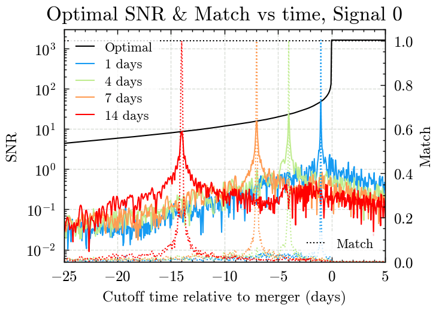
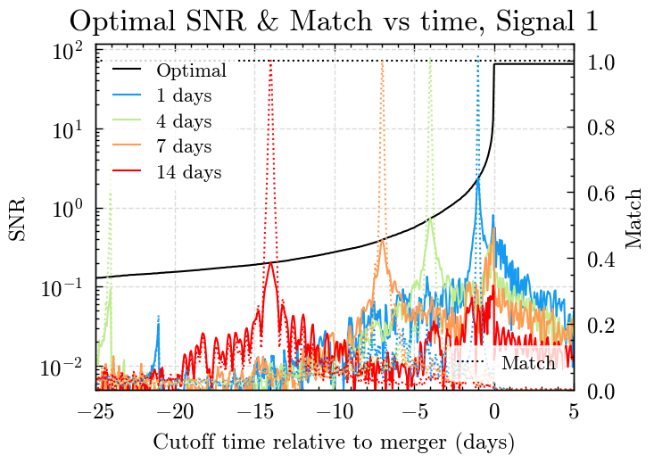
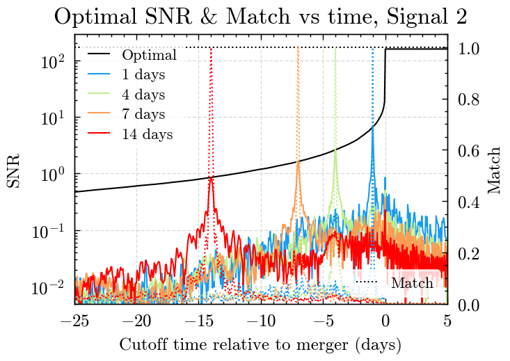
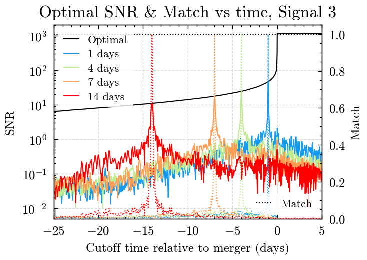
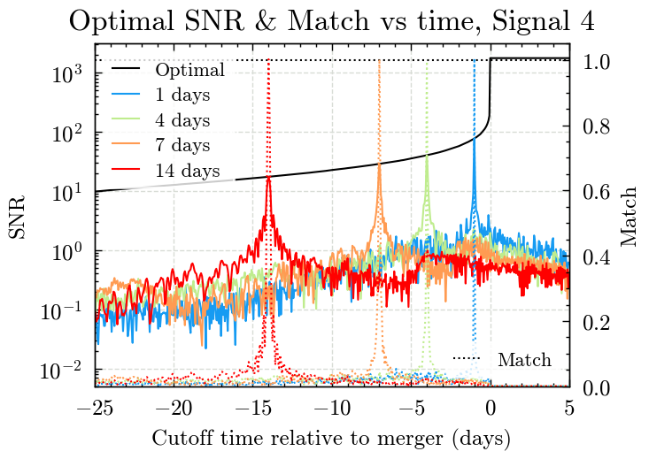
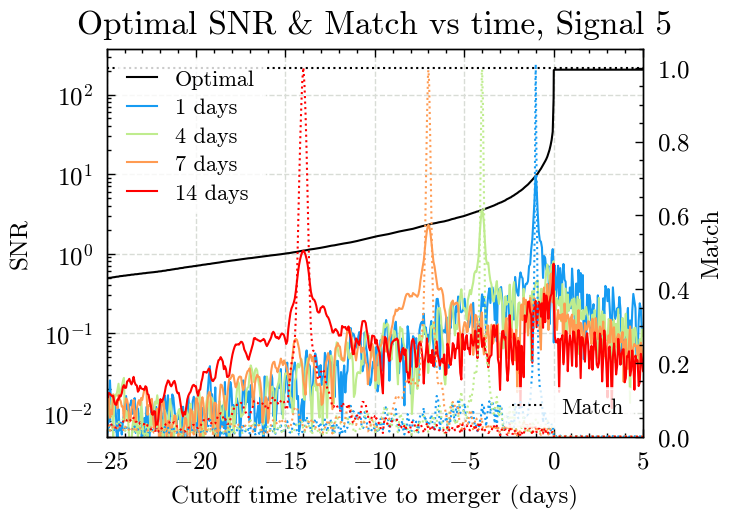
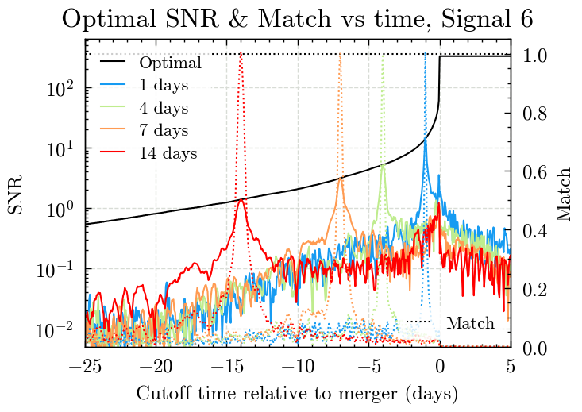
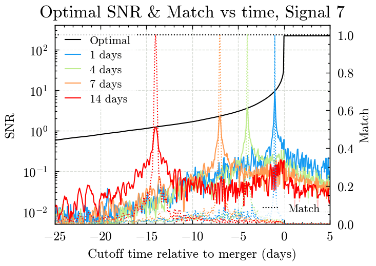
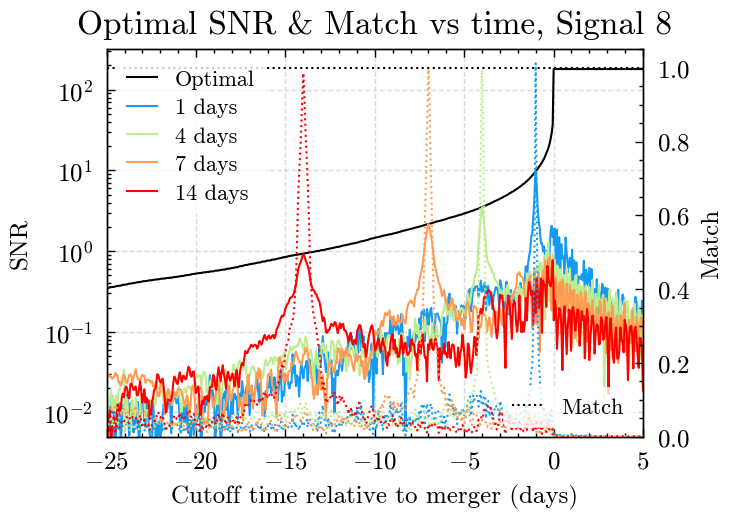
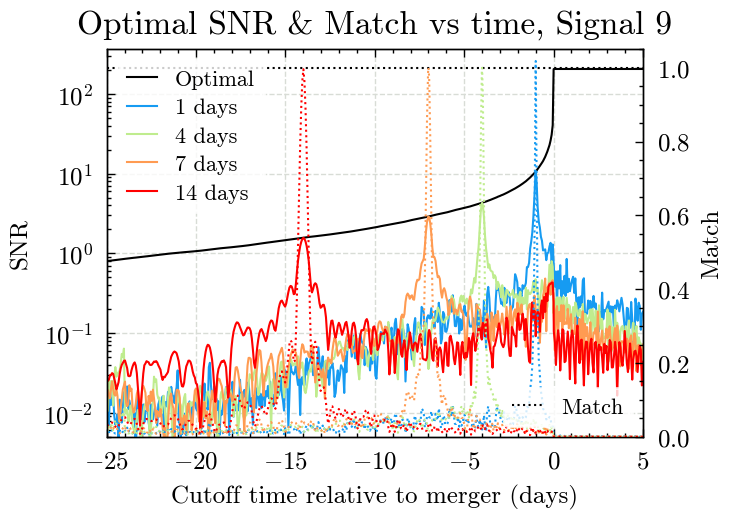
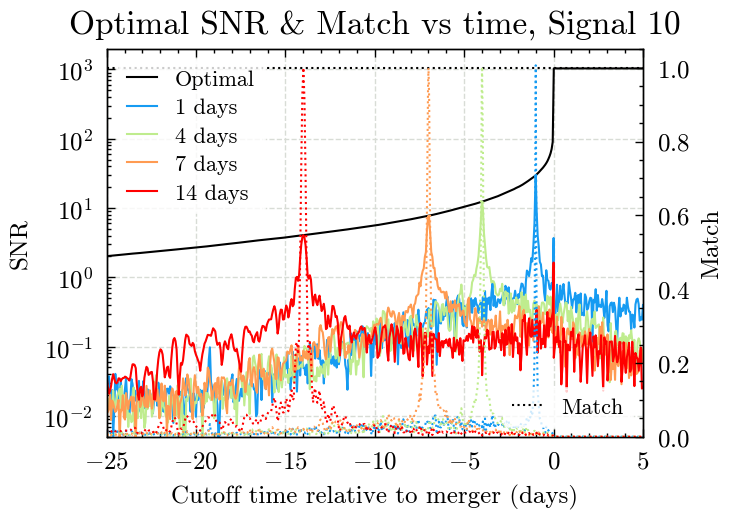
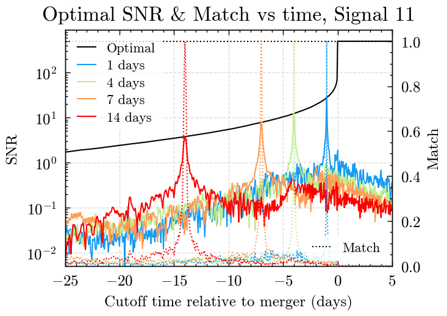
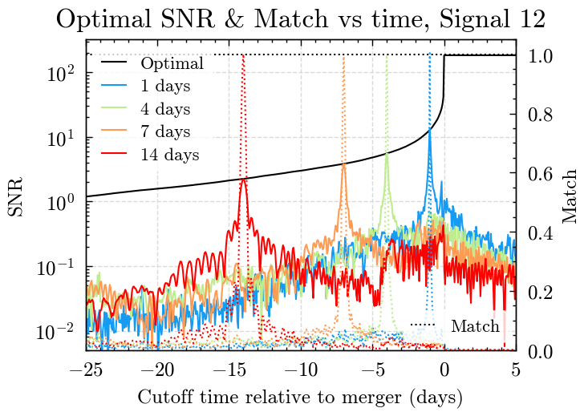
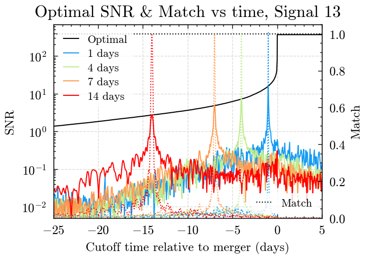
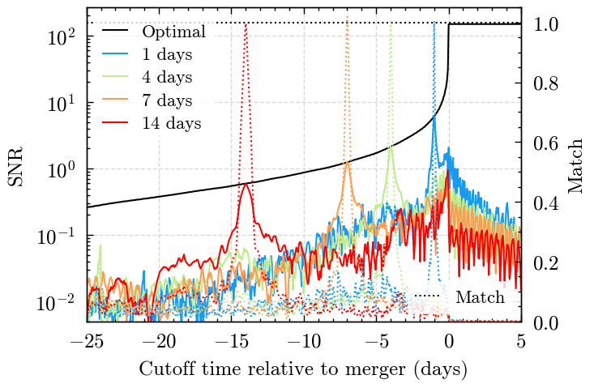